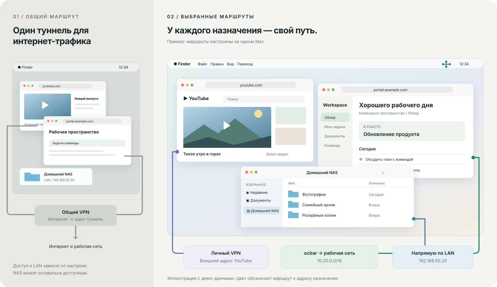
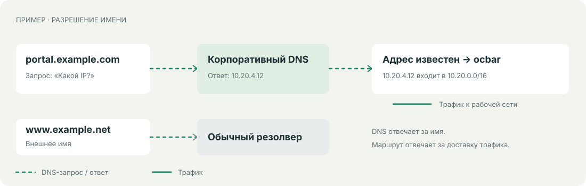
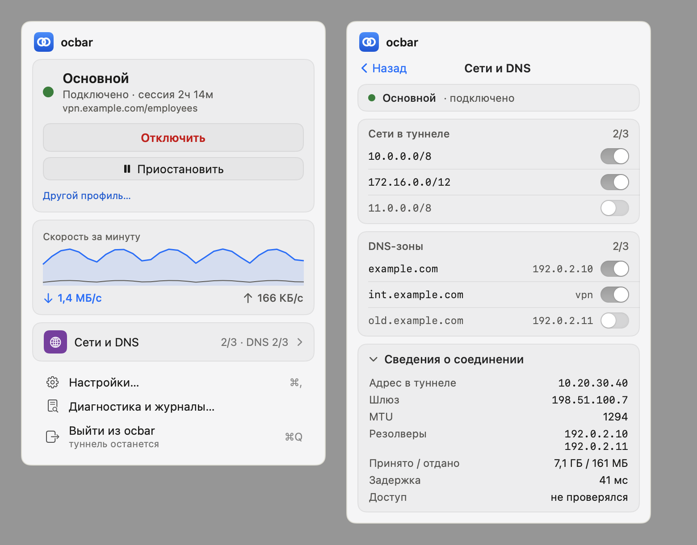
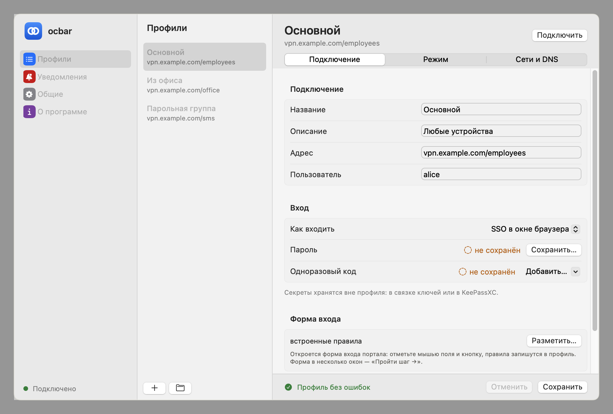
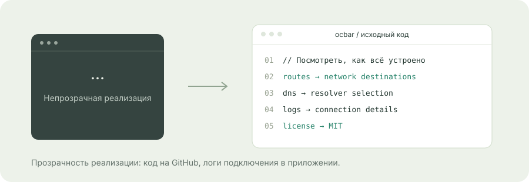

Три окна.
Три пути.
Один Mac.
Рабочий портал — через ocbar. Видео — через личный VPN. Домашние папки — по локальной сети.
Выбирайте сети, которым нужен рабочий туннель.

Пример при отсутствии конфликтов маршрутов и DNS. ocbar управляет одной собственной сессией; личный VPN настраивается отдельно. Маршруты выбираются по сетям и адресам назначения.
Окна — иллюстрация с демо-даннымиОставьте работе
её часть сети.
Выбранные маршруты отправляют в рабочий туннель нужные сети. Как будут доступны остальные назначения, определяют отдельный VPN и обычная сеть Mac.
В этом примере ocbar получает рабочую сеть, личный VPN — выбранный внешний трафик, а NAS доступен по LAN. Это маршрутизация по адресам, без привязки приложения к VPN.
Имя спросим
у правильного DNS.
Для рабочего домена — корпоративный DNS. Для внешнего — обычный резолвер. Когда IP известен, трафик идёт по подходящему маршруту.

Пример: portal.example.com
www.example.net
DNS отвечает за имя, маршрут — за доставку.
Сложная сеть.
Знакомый Mac.
Подключение рядом с часами. Маршруты и параметры — в профиле. Вот настоящий интерфейс ocbar, отдельно от схемы выше.

Настоящий скриншот ocbar.

Настоящий скриншот ocbar.
01Передать настройки коллеге
Профиль .ocbar передаёт настройки подключения. Коллега импортирует файл и входит самостоятельно со своими учётными данными.
02Подключить свой CSD wrapper
Если для подключения нужен CSD wrapper, его предоставляет пользователь. Решение о допуске устройства принимает VPN-шлюз.
03Выбрать SOCKS вместо системных маршрутов
SOCKS с ocproxy и SystemProxy=off работает без root, системных маршрутов и изменений системного DNS. Приложение, которому нужен прокси, настраивается отдельно.
Видно,
как устроено.
Логи помогают понять подключение. Исходный код — изучить реализацию, предложить исправление или собрать свою версию. Лицензия MIT.
Открыть исходный код ↗